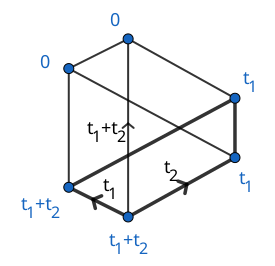

Subgraph
The following figure shows the GKM subgraph of a Schubert variety $X_w$ in the full flag variety of $\mathbb{C}^3$. Edge labels illustrate the axial function, while the vertex labels describe the equivariant Poincaré dual of $X_w$ via localization.

GKMtools.subgraph_from_vertices — Function
subgraph_from_vertices(G::AbstractGKMGraph, vertices_to_keep::AbstractVector{<:Integer})Return the induced GKM subgraph of G, with the vertices of the subgraph given by vertices_to_keep. The GKM subgraph structure keeps both the ambient graph and the subgraph. The connection on the subgraph is the algorithmic connection. See also ambient_graph and subgraph.
Examples
julia> G = projective_space(GKMGraph, 3)
GKM graph with 4 nodes, valency 3 and axial function:
2 -> 1 => (1, -1, 0, 0)
3 -> 1 => (1, 0, -1, 0)
3 -> 2 => (0, 1, -1, 0)
4 -> 1 => (1, 0, 0, -1)
4 -> 2 => (0, 1, 0, -1)
4 -> 3 => (0, 0, 1, -1)
Birkhoff-Grothendieck connection for GKM graph with 4 nodes and valency 3
julia> S = subgraph_from_vertices(G, [2, 3]) # GKM subgraph structure
GKM subgraph of:
GKM graph with 4 nodes, valency 3 and axial function:
2 -> 1 => (1, -1, 0, 0)
3 -> 1 => (1, 0, -1, 0)
3 -> 2 => (0, 1, -1, 0)
4 -> 1 => (1, 0, 0, -1)
4 -> 2 => (0, 1, 0, -1)
4 -> 3 => (0, 0, 1, -1)
Birkhoff-Grothendieck connection for GKM graph with 4 nodes and valency 3
Subgraph:
GKM graph with 2 nodes, valency 1 and axial function:
3 -> 2 => (0, 1, -1, 0)
Algorithmic connection for GKM graph with 2 nodes and valency 1
julia> subgraph(S) # forget the ambient graph
GKM graph with 2 nodes, valency 1 and axial function:
3 -> 2 => (0, 1, -1, 0)
Algorithmic connection for GKM graph with 2 nodes and valency 1
julia> ambient_graph(S) # forget the subgraph
GKM graph with 4 nodes, valency 3 and axial function:
2 -> 1 => (1, -1, 0, 0)
3 -> 1 => (1, 0, -1, 0)
3 -> 2 => (0, 1, -1, 0)
4 -> 1 => (1, 0, 0, -1)
4 -> 2 => (0, 1, 0, -1)
4 -> 3 => (0, 0, 1, -1)
Birkhoff-Grothendieck connection for GKM graph with 4 nodes and valency 3subgraph_from_vertices(G::AbstractGKMGraph, labels_to_keep::AbstractVector{<:AbstractString})As before, but the vertices are given by their labels.
GKMtools.ambient_graph — Function
ambient_graph(G::AbstractGKMSubgraph)Return the ambient graph of G.
GKMtools.subgraph — Function
subgraph(G::AbstractGKMSubgraph)Return the subgraph of G as a smooth or orbifold GKM graph, thus forgetting the ambient space.
In order to construct the Poincaré dual class of a subgraph, see poincare_dual.